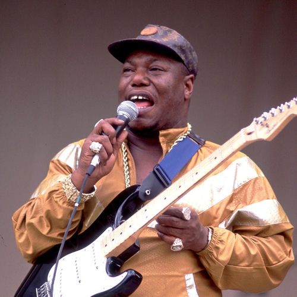

L.V. Johnson
L.V. Johnson was an American Chicago blues and soul-blues guitarist, singer and songwriter. He is best known for his renditions of "Don't Cha Mess with My Money, My Honey or My Woman" and "Recipe". He worked with the Soul Children, the Bar-Keys and Johnnie Taylor. Songs he wrote were recorded by Tyrone Davis, Bobby Bland and the Dells. He was the nephew of Elmore James.
Complete Discography & Tracklists (1)